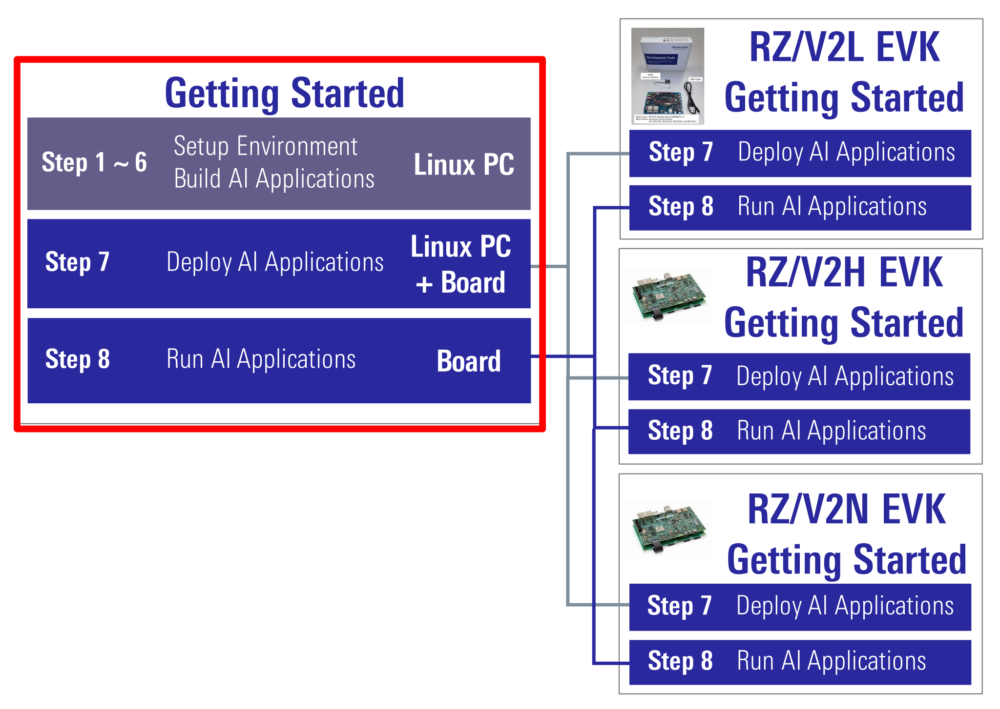

Renesas
RZ/V AI
The best solution for
starting your AI applications.
Provided by Renesas Electronics Corporation


To keep you updated,
Watch our GitHub repository
Watch
This project is maintained by renesas-rz
Hosted on GitHub Pages — Theme by orderedlist
This page explains how to start-up the AI SDK.
AI SDK is build for specific board.
Its version varies depending on the supported board.
| Supported Board | Supported AI SDK |
|---|---|
| RZ/V2L Evaluation Board Kit | RZ/V2L AI SDK v5.00 |
| RZ/V2H Evaluation Board Kit | RZ/V2H AI SDK v5.20 |
| RZ/V2N Evaluation Board Kit | RZ/V2N AI SDK v5.00 |
Learn more about the RZ/V series.
- RZ/V AI SDK: Refers RZ/V2L AI SDK, RZ/V2H AI SDK and RZ/V2N AI SDK.
- EVK: Refers "Evaluation Board Kit".
- For RZ/V2L EVK: RZ/V2L AI SDK v2.10
- For RZ/V2H EVK: RZ/V2H AI SDK v3.00
For the GUI environment, see AI Navigator Quick Start Guide.
Introduction
Getting Started Flow
Getting Started explains the instruction to run AI Applications.Common instructions are explained in this document.
Board dependent instructions are explained in each EVK Getting Started page.

Software
Renesas provides following software.Step 1: Obtain an evaluation board
Step 2: Obtain necessary environment
1. Necessary Equipments
Please prepare the following equipments for your EVK.
| For | Equipment | Details |
|---|---|---|
| RZ/V2L | RZ/V2L EVK |
Evaluation Board Kit for RZ/V2L. Includes followings.
|
| AC Adapter | USB Power Delivery adapter for the board power supply. | |
| MicroHDMI Cable |
Used to connect the HDMI Monitor and the board. RZ/V2L EVK has microHDMI port. |
|
| USB Camera |
Optional. AI Applications support USB camera input. Supported resolution: 640x480 Supported format: 'YUYV' (YUYV 4:2:2) |
|
| Windows PC |
Optional. Used as the serial communication console for QSPI Bootloader. Operating Environment : Windows 10 |
|
| RZ/V2H | RZ/V2H EVK | Evaluation Board Kit for RZ/V2H. |
| AC Adapter |
USB Power Delivery adapter for the board power supply. 100W is required. |
|
| HDMI Cable |
Used to connect the HDMI Monitor and the board. RZ/V2H EVK has HDMI port. |
|
| USB Camera |
Since RZ/V2H EVK does not include camera module, this will be the standard camera input source. Supported resolution: 640x480 Supported format: 'YUYV' (YUYV 4:2:2)
To use MIPI camera, please refer to e-CAM22_CURZH provided by e-con Systems.
|
|
| RZ/V2N | RZ/V2N EVK | Evaluation Board Kit for RZ/V2N. |
| AC Adapter |
USB Power Delivery adapter for the board power supply. 100W is required. |
|
| HDMI Cable |
Used to connect the HDMI Monitor and the board. RZ/V2N EVK has HDMI port. |
|
| USB Camera |
Since RZ/V2N EVK does not include camera module, this will be the standard camera input source. Supported resolution: 640x480 Supported format: 'YUYV' (YUYV 4:2:2)
To use MIPI camera, please refer to e-CAM22_CURZH provided by e-con Systems.
|
|
| Common | USB Cable Type-C | Connect AC adapter and the board. |
| HDMI Monitor | Used to display the graphics of the board. | |
| microSD card |
Must have over 16GB capacity of blank space. Operating Environment: Transcend UHS-I microSD 300S 16GB |
|
| Linux PC |
Used for Setup microSD card and RZ/V AI SDK Setup. Operating Environment: Ubuntu 20.04 |
|
| SD card reader | Used for setting up microSD card. | |
| USB Hub | Used to connect USB Keyboard and USB Mouse to the board. | |
| USB Keyboard | Used to type strings on the terminal of board. | |
| USB Mouse | Used to operate the mouse on the screen of board. |
To check the specification of your USB camera, use
v4l2-ctl command.
2. Necessary Software
Please install following software on Linux PC.
- Docker
- git
- bmap-tools (For RZ/V2H and RZ/V2N)
Step 3: Obtain RZ/V AI SDK
RZ/V AI SDK provides following packages for each supported board.
Step 4: Extract RZ/V AI SDK package
This step explains how to extract the RZ/V AI SDK zip file.
- On your Linux PC, make the working directory.
mkdir -p ai_sdk_work - Register the working directory path to an environment variable.
export WORK=<path to the working directory>/ai_sdk_work - Move to the working directory.
cd ${WORK} - Extract RZ/V AI SDK zip file under the working directory.
unzip <Path to the file>/RTK0EF0*.zip -d ${WORK} - Check the working directory to confirm the package contents.
ls ${WORK}/- If the above command prints followings, the package is extracted correctly.
ai_sdk_setup board_setup documents references r11an0*.pdf
- If the above command prints followings, the package is extracted correctly.
Step 5: Setup RZ/V AI SDK
This step explains how to setup the RZ/V AI SDK environment.
- On your Linux PC, move to the working directory.
cd ${WORK}/ai_sdk_setup - Build docker image.
- For RZ/V2L
sudo docker build -t rzv2l_ai_sdk_image --build-arg SDK="/opt/poky/3.1.31" --build-arg PRODUCT="V2L" . - For RZ/V2H, RZ/V2N
Since RZ/V2N is a brother chip of RZ/V2H, the same commands can be used.sudo docker build -t rzv2h_ai_sdk_image --build-arg SDK="/opt/poky/3.1.31" --build-arg PRODUCT="V2H" .
- For RZ/V2L
- Create new directory to be mounted on Docker container.
mkdir ${WORK}/ai_sdk_setup/data - Create docker container.
Here,<rzv2l/rzv2h>_ai_sdk_containeris a name of docker container, which can be changed by user.- For RZ/V2L
sudo docker run -it --name rzv2l_ai_sdk_container -v $(pwd)/data:/drp-ai_tvm/data rzv2l_ai_sdk_image - For RZ/V2H, RZ/V2N
Since RZ/V2N is a brother chip of RZ/V2H, the same commands can be used.sudo docker run -it --name rzv2h_ai_sdk_container -v $(pwd)/data:/drp-ai_tvm/data rzv2h_ai_sdk_image
$(pwd)/datais mounted to/drp-ai_tvm/dataon the Docker container by the above command option.
For example, you can use this directory to copy files created on the Docker container to your local environment.

- For RZ/V2L
- In docker container, run the following command to copy
libtvm_runtime.so, which is the necessary file for the board, to host machine.
cp /drp-ai_tvm/obj/build_runtime/${PRODUCT}/libtvm_runtime.so /drp-ai_tvm/data - To exit docker, run following commands.
exit - To start the docker container again, run the following command.
docker start -i <container_name, i.e., rzv2l_ai_sdk_container>
You have finished the RZ/V AI SDK environment setup.
You are ready to build the AI applications!
Step 6: Build RZ/V AI Application
This step explains how to build AI application.
To see the overview about AI Applications, please refer to About AI Applications page.
If you would like to run the application as quickly as possible, you can skip this step and proceed to the next step (Step 7: Deploy AI Application) since pre-build application binary is provided.
Building instructions.
In AI Applications, there are two types of applications.
| Application | GitHub Repository | Details | Example |
|---|---|---|---|
| <Application 1> |
|
These repositories provide the complete instruction in each application documentation. |
R01_object_detection |
| <Application 2> |
|
This repository only contains AI Applications for RZ/V2L EVK.
|
01_Head_count |
-
Option 1: For <Application 1>
-
Check the
README.mddocument provided in application directory and follow the instruction in the chapter called "Application: Build Stage" (or similar) to build the application.
Example:
In R01_object_detection application, follow the instruction here to generate the following application binary.- object_detection
After you generated the application binary, please proceed to Step 7 -
Check the
-
Option 2: For <Application 2>
- Run (or start) docker container.
Example:
Run the following command to start the docker container created in Step 5.docker start -i rzv2l_ai_sdk_container - Change the environment variable to use the cross compiler.
source /opt/poky/3.1.31/environment-setup-aarch64-poky-linuxNote This command needs to be called everytime user opened the new terminal. - Move to the mounted point in docker container.
cd /drp-ai_tvm/data - Download the application source code.
Here, we use RZV2L_AiLibrary repository 01_Head_count application as an example.
git clone https://github.com/Ignitarium-Renesas/RZV2L_AiLibrary - Move to the application directory.
cd RZV2L_AiLibrary/01_Head_count/Head_count_camNote The file configuration depends on each application. Please check the file configuration in the repository carefully. - Build the application with
makecommand.
make - Check that following application is generated in the
RZV2L_AiLibrary/01_Head_count/.
Head_count_cam/exe- head_count_cam_app
- If you would like to build the other applications of <Application 1> (Option 1), please exit and restart the docker container.
After you generated the application binary, please proceed to Step 7 - Run (or start) docker container.
Step 7: Deploy AI Application
Please see each EVK Getting Started Step 7 for detailed instructions.
After Step 7, users should have completed followings.
- Setup miroSD card.
- Deploy the application on miroSD card.
- Boot the board.
Step 8: Run AI Application
Please see each EVK Getting Started Step 8 for detailed instructions.
After Step 8, users should have completed followings.
- Run the application.
This is the end of Getting Started.
You have experienced the AI Application development procedures.
Next step is to change the application to create your own AI Application.
You can use the applications listed in AI Applications to expand your ideas!
If you would like to customize Yocto Linux or develop your own board, please change and build the AI SDK Source Code based on your environment.
Please refer to How to Build AI SDK page shown below for more details.